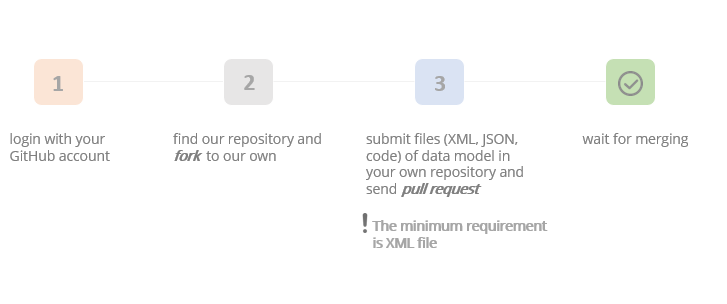

Contributions are done via pull requests. Contributors can submit object definitions, examples, configuration files and implementation code to the repository. All file types are optional, but each contribution should contain at least a file containing the data or object model definition of the device to be managed.
Widely used for software development, supports forking and branching
Quality guarantee for data models by merging pull requests after verification
Facilitates communication between contributors and repository maintainers
Once contributors have their domain-specific data model, they could follow steps below to contribute:
Once a pull request is approved, the contributor should be able to see the models on the web page of the repository soon. Let's get started.
Additionally, enterprises or organisations can fork and extend the repository for their own use. After forking, repositories can also be flexiby customised and federated accordingly.